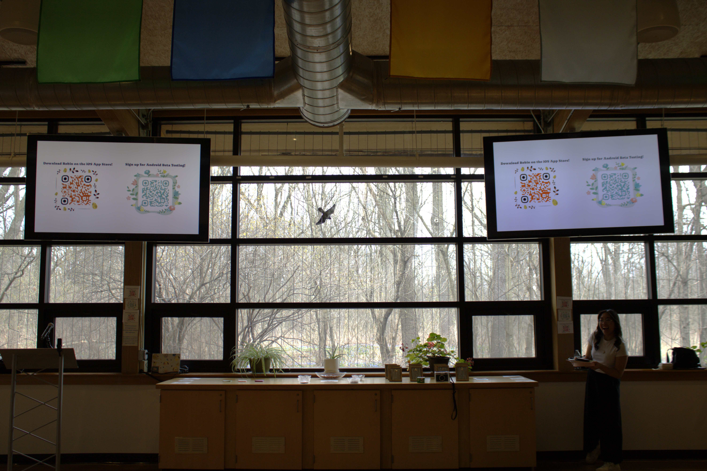

Research, Recognition & Real‑World Impact
Robin isn’t just a mobile app — it’s a meaningful contribution to research, accessibility, and the future of nature‑based learning.
From peer‑reviewed publications to real‑world deployment and field testing, Robin is already making an impact in the classroom,
in the field, and in academic circles.
Academic Research
We designed Robin with real‑world usability in mind — but we also wanted to share our findings with the broader research community.
Below are the two papers we authored for leading AI & ecology conferences:
Robin: An Intelligent Bird Observation Application for the Visually Impaired and K‑12 Education
- Status : Accepted — IEEE Electro/Information Technology (EIT) Conference 2025
- Focus : Voice‑first design, accessibility for visually impaired users, classroom integration
➤ View Full Paper (PDF)
A Spatiotemporal Machine Learning Framework for Ecologically‑Informed Bird Sighting Prediction
- Status : Submitted — International Joint Conference on Neural Networks (IJCNN) 2025
- Focus : Forecasting bird sightings with time, location & environmental data
➤ View Full Paper (PDF)
Launch Event at the Environmental Interpretive Center (EIC)
On April 14, we hosted Robin's official launch at the EIC (3‑4 PM). More than 60 attendees — including the Provost, CIS Chair, Dean, faculty,
friends and family — joined us for a live demo. Students, visitors, and visually impaired guest Donna tested Robin both indoors and on the trail,
validating our accessibility features in a real birdwatching setting.
Launch Event Gallery

The Robin Team

Group photo with the Robin team and attendees

The Robin Team with Dean Kridli

The team with Dr. Song & Dr. Sirja Das

The Robin team with Dr. Song & Dr. Bruce Maxim

Attendees Of the Launch

The Robin Team with Provost Gabriella

Accessibility testing with our guest Donna

Team Discussion

EIC Space
Robin is an AI‑powered mobile app that transforms birdwatching into an interactive, inclusive, and educational experience. With real‑time sound ID,
voice‑controlled navigation, predictive insights, and a customized chatbot, Robin brings nature closer to everyone — regardless of ability or experience level.
👥
60+ Attendees
Including faculty and community members
🔊
Live Demonstrations
Real-time bird sound identification
♿
Accessibility Testing
Validated with visually impaired users
App Store Deployment
Robin is now live on the Apple App Store and will arrive on Google Play after our two‑week Android beta period.
It’s free to download and optimized for:
- Nature centers, parks & wildlife reserves
- Personal nature walks & guided tours
- Classrooms & environmental science courses
Why Robin Stands Out
Robin blends real‑time bird sound identification, predictive analytics, ChatGPT‑powered conversation,
and text‑to‑speech accessibility into one seamless tool. It empowers users of all abilities to explore nature through sound,
creating new opportunities for learning, awareness, and connection.
Community & Educational Impact
Robin was built for real classrooms and real users. We have:
- Partnered with the EIC to pilot nature-based learning experiences
- Conducted accessibility testing with visually impaired users
- Shared Robin with K‑12 educators to enrich science curricula with simplified experiences
The result? Learners don’t just see birds — they hear and understand them in real time.